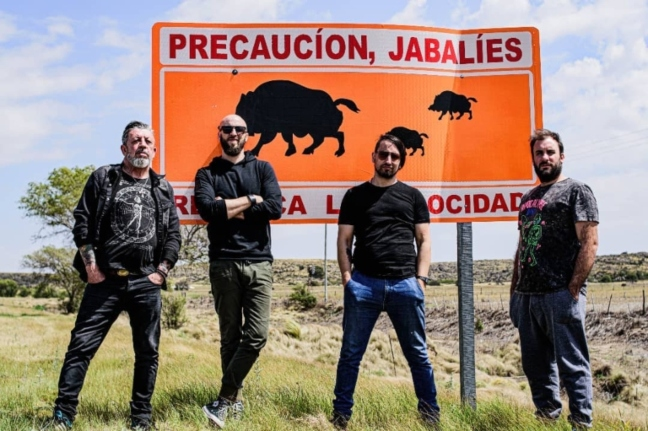

HISTORIA
JABALÍ nació a fines de 2019, cuando dos de sus miembros decidieron armar un nuevo proyecto luego de pausar actividades con la banda Osamenta. Así fue como Pietra López (voz) y Mauricio Cikota (guitarra), unieron fuerzas con el Turko Elel (bajo) y Diego Dottavio (batería), para darle forma a esta banda, cuyo estilo deriva de múltiples influencias, desde Black Sabbath hasta Stone Sour, con un sonido acorde a los tiempos que corren. Durante su primer año de vida, atravesado por la pandemia, el grupo se enfocó en componer lo que sería en un futuro no muy lejano su disco debut. En el mismo período decidió grabar una versión de Sabbath Bloody Sabbath en formato videoclip de cuarentena y participó del festival por streaming Heresy Fest. Ambos clips disponibles en su canal de YouTube. Termina el 2020 con la composición total y grabación de 10 temas que hoy forman parte del álbum "Primera Embestida", disponible en todas las plataformas digitales desde mediados de marzo del presente año. El disco tuvo gran aceptación durante sus primeros días a la luz. Actualmente, la banda se encuentra presentando este material, habiendo pasado ya por Ramos Mejía, un show doble en Pergamino y Wilde. Además de enfocarse en los shows en vivo, se está gestando lo que será el primer videoclip de la banda.
